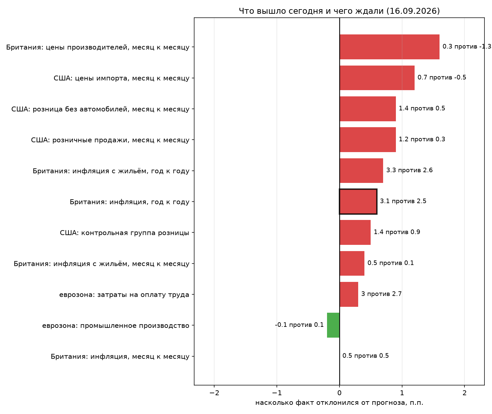

Британия, инфляция, год к году: 3.1% против прогноза 2.5%

Консенсус недооценил показатель на 0.6 п.п. Ждали движения вниз с 2.6%, а показатель пошёл в другую сторону.
Зачем это в канале про замеры. Такие расхождения двигают ожидания по ставке, а ставка — та самая планка, которую обязана побить любая схема: пока рублёвый вклад даёт свои проценты без риска, всё, что ниже, проигрывает бездействию. Цифру планки держу в закрепе, она обновляется сама.
И это не единичный промах: из 11 сегодняшних публикаций 9 вышли выше прогноза. Ошиблись не в одном показателе, а в картине целиком. На графике — все сегодняшние публикации высокой и средней значимости, у которых прогноз и факт уже известны.
И чего здесь нет: вывода о том, куда пойдёт цена. Реакция рынка на статистику зависит от того, что уже заложено в цену, а это отдельный замер, которого у меня нет.
Архив замеров: aasuvorov.github.io/orderflow